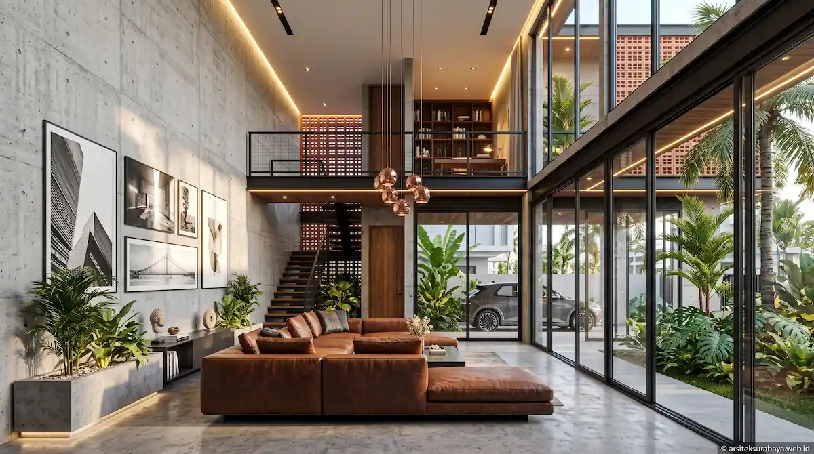

1. Daya Tarik Konsep Tropis Industrial Modern di Surabaya
Gaya arsitektur tropis industrial modern kini menjadi salah satu pilihan utama bagi generasi pemilik rumah muda, profesional kreatif, hingga pengusaha di Kota Surabaya. Konsep ini menonjolkan kejujuran tekstur material atau raw material finish seperti dinding semen ekspos, ekspos bata merah terakota, elemen besi hitam berstruktur, dan aksen kayu alam yang hangat. Tampilan visualnya terkesan maskulin, tegas, namun tetap sangat estetis dan bernilai seni tinggi.
Namun, menerapkan konsep industrial secara mentah di kota beriklim panas lembap seperti Surabaya memiliki tantangan teknis tersendiri. Bangunan berpijak material semen ekspos yang tidak diolah dengan baik berisiko menyerap dan menyimpan panas matahari dalam waktu lama. Oleh sebab itu, tim Arsitek Surabaya Studio memadukan prinsip arsitektur tropis pasif agar hunian tidak hanya tampil keren secara visual, tetapi juga terasa adhem, sejuk alami, serta hemat penggunaan daya listrik AC.
2. Wilayah Potensial & Ramai Layanan Arsitek di Surabaya
Kebutuhan akan perancangan desain rumah dan bangunan komersial berkonsep tropis industrial terus meningkat pesat di beberapa wilayah strategis Surabaya yang memiliki daya beli dan geliat ekonomi sangat tinggi. Kehadiran platform digital arsiteksurabaya.web.id sangat efektif dimanfaatkan oleh pemilik kaveling di koridor-koridor ramai berikut:
- Surabaya Timur (Koridor MERR, Sukolilo, & Rungkut): Dikarenakan lokasinya yang dekat dengan berbagai kampus besar seperti ITS dan Universitas Airlangga, wilayah ini sangat marak dengan pembangunan rumah tinggal keluarga muda, rumah kos eksklusif, serta kafe berkonsep industrial. Penggunaan lahan hook maupun kaveling menengah di area ini sangat potensial dimaksimalkan dengan fasad ganda bernuansa bata ekspos.
- Surabaya Pusat & Selatan (Gubeng, Tegalsari, & Wonocolo): Wilayah perkotaan padat yang didominasi oleh perumahan lama yang membutuhkan proses renovasi atau redesain total. Konsep tropis industrial sangat disukai untuk merenovasi rumah tua menjadi hunian modern berlantai 2 sampai 3 yang memiliki sirkulasi udara melimpah meski di lahan terbatas.
- Surabaya Barat (Sambikerep, Wiyung, & Lakarsantri): Kawasan pemukiman yang berkembang sangat pesat dengan infrastruktur jalan yang memadai. Banyak pemilik kaveling di klaster perumahan modern menginginkan vila kota atau hunian tinggal berkonsep kontemporer industrial yang terhubung langsung dengan area taman samping dan kolam renang privat.
3. Pemilihan Material Eksos & Ketahanan Cuaca Ekstrem
Salah satu kekhawatiran terbesar dalam membangun rumah gaya industrial di Surabaya adalah ketahanan material terhadap cuaca hujan lebat dan terik matahari yang berganti secara ekstrem. Tim arsitek kami menerapkan perlakuan khusus pada setiap material finishing:
- Dinding Unfinished Concrete Ber-Coating: Dinding semen acian halus dilapisi dengan cairan clear coating hydrophobic berformula khusus anti jamur dan kedap air, mencegah penyerapan air saat musim hujan dan mempertahankan warna asli semen agar tidak kusam.
- Bata Terakota Berpori / Roster: Digunakan sebagai dinding bernapas (breathing wall) pada fasad depan. Roster memberikan celah masuk bagi udara segar sekaligus berfungsi sebagai pembias sinar matahari langsung.
- Rangka Besi & Baja Pelindung Rust-Protection: Seluruh struktur besi exposed dilapisi dengan cat primer anti karat berstandar industri tinggi untuk mencegah korosi akibat kelembapan udara kota pantai.

4. Pengolahan Void, Roster Bata, dan Inner Courtyard
Untuk menekan suhu panas di dalam interior, tata ruang dirancang dengan prinsip open plan serta pengolahan area hijau di bagian tengah rumah (inner courtyard). Tanaman tropis daun lebar seperti pohon ketapang kencana, monstera, dan pakis diletakkan di bawah bukaan skylight atau area void beratap tinggi.
Kehadiran void dengan ketinggian plafon mencapai 6 meter menciptakan efek cerobong panas alami (stack ventilation). Udara panas dialirkan ke atas dan dibuang melalui bukaan kisi-kisi atap, sementara udara sejuk ditarik dari taman bawah. Penggabungan antara pencahayaan alami matahari dan vegetasi segar hijau memberikan kontras estetis yang sangat menawan pada warna abu-abu semen ekspos.
5. Kepastian Biaya Konstruksi RAB & Kelengkapan Dokumen PBG
Membangun rumah tropis industrial membutuhkan ketelitian pada tahap Detail Engineering Design (DED) agar tukang di lapangan tidak salah menafsirkan detail sambungan struktur exposed. Studio kami melengkapi setiap dokumen perencanaan dengan gambar kerja rinci, rancangan tata lampu spotlight, serta perhitungan Rencana Anggaran Biaya (RAB) yang terstruktur transparan.
Selain itu, dokumen teknis kami disesuaikan dengan syarat perizinan resmi Persetujuan Bangunan Gedung (PBG) Kota Surabaya, memastikan proyek pembangunan berjalan aman secara legalitas, tepat waktu, dan tidak melebihi anggaran yang disiapkan.
6. Konsultasi Desain Eksklusif di Arsitek Surabaya Studio
Ingin mewujudkan rumah tinggal atau tempat usaha berkonsep tropis industrial modern yang sejuk, maskulin, dan ikonis di Surabaya? Percayakan perancangannya kepada tim konsultan berpengalaman dari Arsitek Surabaya Studio.
Dapatkan pendampingan profesional dari tahap ide konsep awal, tata ruang 3D photorealistic, hingga supervisi berkala di lokasi proyek Anda di MERR, Sukolilo, Gubeng, Sambikerep, maupun area lainnya di Surabaya.